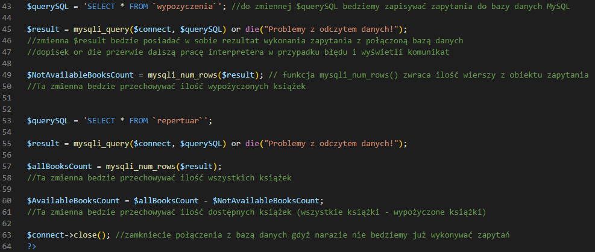

Pobierz paczkę strony "Biblioteka miejska", do której dopiszemy funkcjonalności.
Pobierz
Zawartość wypakuj do katalogu htdocs ( C:\xampp\htdocs ).
Utwórz plik connect.php zawierający trzy zmienne dotyczące połączenia z bazą danych MySQL.
Zmień rozszerzenie pliku index z html na php.
Nastepnie skonfiguruj w nim połączenie zgodnie z zawartością obrazka poniżej.
Gdy połączenie jest poprawne, pierwszą funkcjonalnością którą zaimplementujemy bedzie uzupełnienie danych dla tych trzech kart.
Wykonaj odpowiedznie zapytania do bazy i przygotuj zmienne z danymi dla kart zgodnie z obrazkiem poniżej.

Zmodyfikuj karty wywołując za pomocą echo zmienne z informacją o ilości książek.
Zmodyfikuj pierwszy wiersz tabeli zawarty pomiędzy znacznikami <tr>...</tr>.
if($linkchoice == "Wartość") -- sprawdza czy warunek porównania zawarty w nawiasach jest prawdą.
Jeżeli tak to za pomocą echo wypisze klasę html/css modyfikującą styl rekordu tabeli.
W znaczniku <a> zastosowanie linku " ?sort=wartość " sprawi że strona odświerzy sią a z dopiskiem ?sort=wartość w adresie URL.
Logika sprawdzania po której kolumnie użytkownik bedzie chiał sortować tabelę książek.
Na koniec zmodyfikuj zapytanie stosując słowo kluczowe ORDER BY
Posłuży do sortowania zestawu wyników domyślnie rosnoco Wiec nie ma patrzeby zapisywać słowa kluczowego ASC, aby uzyskać sortowanie malejące użyj DESC
Zmienna $column pozwoli na "dynamiczne" dostosowanie po jakej krotce ma zostać posortowania tablica wyniku zapyatnia.
Efekt końcowy strony główne z sortowaniem tabeli rosnoco po nazwie Autora